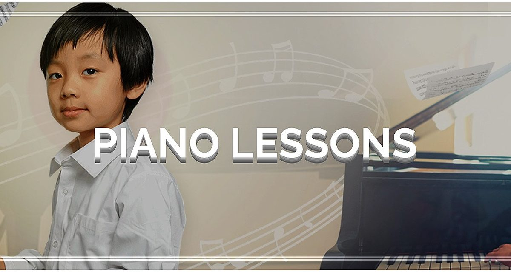
4 岁以上
钢琴
古典、现代、流行、爵士及 RCM 曲目，从第一年起培养扎实的读谱与演奏能力。
- Faber、Piano Adventures 与 RCM 教材
- 初级：识谱、节奏、音阶、基本和弦
- 中高级：RCM 各级考试、音乐会
- 成人及长者欢迎
温哥华 Kensington · RCM 认证教师
4岁及以上包括成人的一对一钢琴、小提琴、电木吉他、尤克里里、声乐、乐理与作曲课程。各种水平和能力均可报名；老师持有硕士学位及加拿大皇家音乐学院（RCM）认证，学费全部公开。
电话、短信、WhatsApp、微信同一号码。微信：linahan711（标注课程咨询）。周一至周六上课，需预约。服务温哥华、本拿比、列治文、新西敏及大温地区。
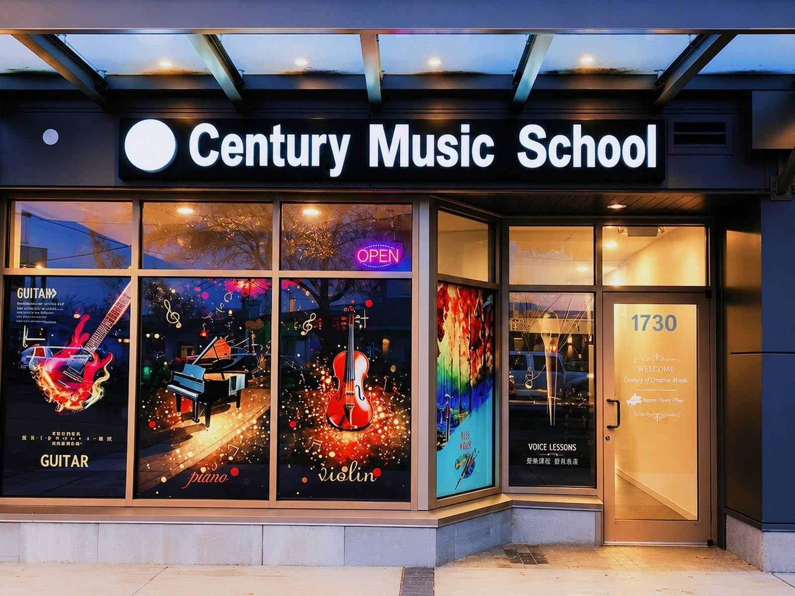
周一 3–7 · 周二至周五 3–7:30 · 周六 8:30–6
“我儿子现在已经是 RCM 钢琴十级，考试获得一等优异成绩。”
Preeti，两名学生的家长，已在校学习五年以上
我们的特色
课程
所有音乐课程均为一对一授课，按学生的进度个别安排。音乐会、音乐节和 RCM 考试在你准备好时才会到来。

4 岁以上
古典、现代、流行、爵士及 RCM 曲目，从第一年起培养扎实的读谱与演奏能力。
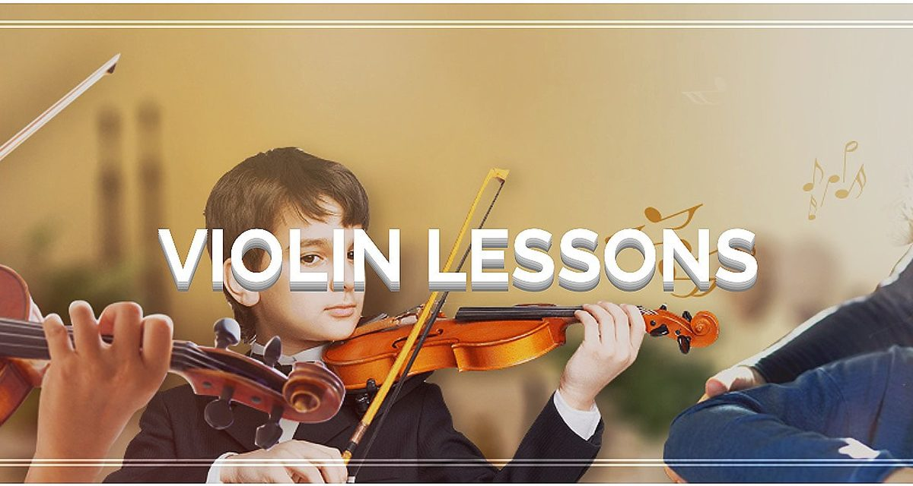
5 岁以上
从初学到高级的一对一小提琴课，为演出、考试和面试做准备，同时培养正确的技巧与音乐表现力。
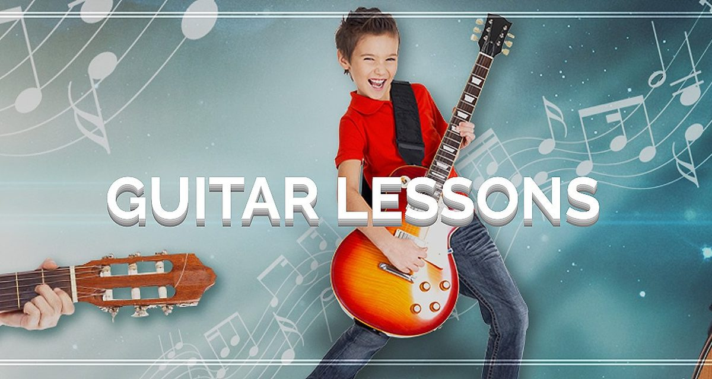
6 岁以上
民谣、电吉他、指弹、摇滚、蓝调与古典吉他，以及尤克里里，面向儿童、青少年和成人。
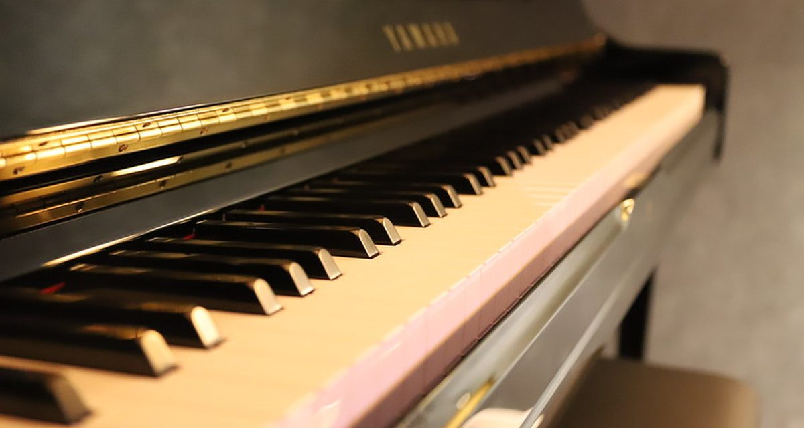
5 岁以上
一对一声乐课，培养气息、音域与自信，为音乐会、合唱团和学校面试做准备。
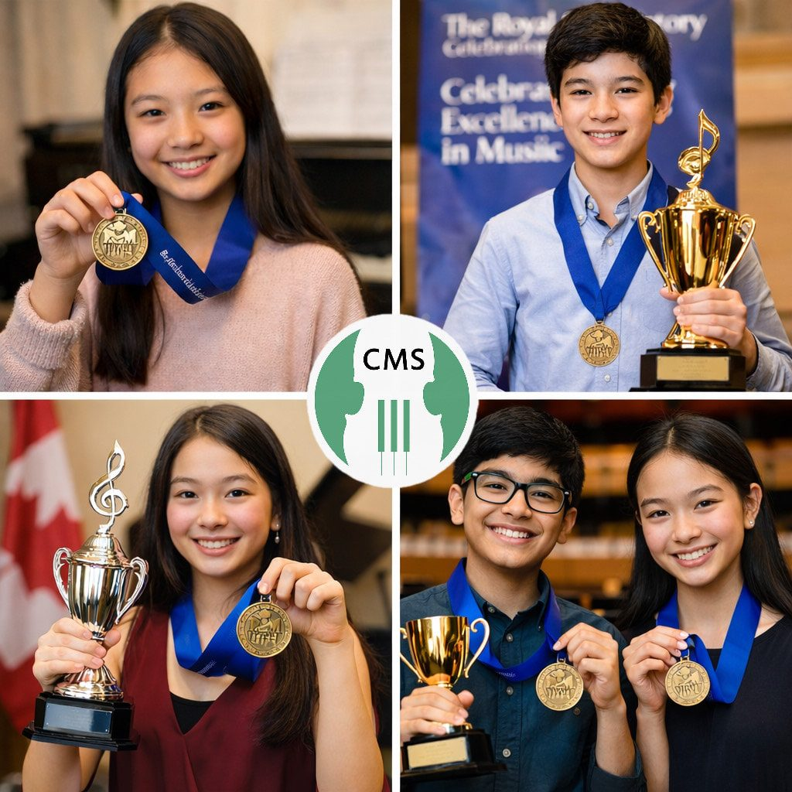
各级别
由 RCM 认证教师带领的各级加拿大皇家音乐考试准备课程，成绩可计入高中学分。
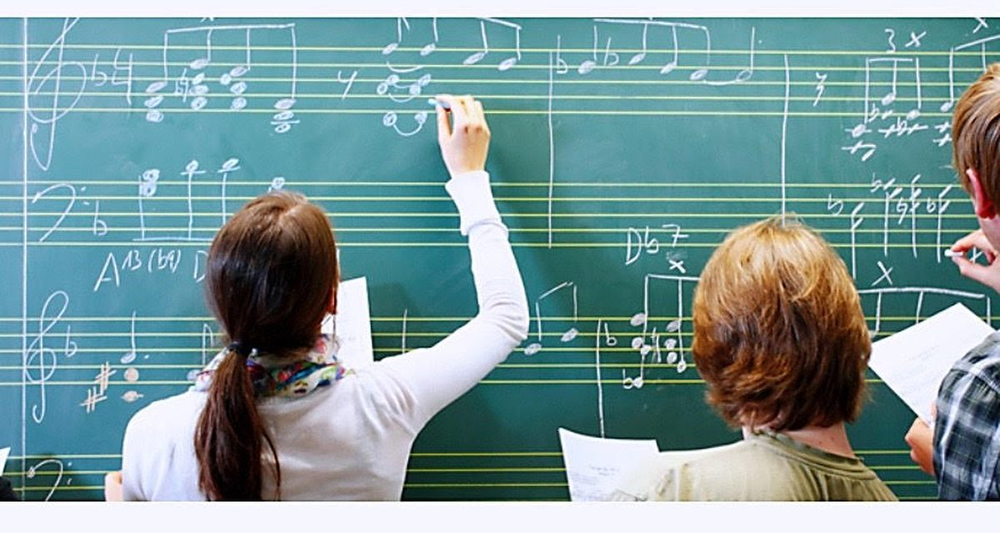
各年龄
初级到高级皇家音乐理论（RCM），可与乐器课同时学习，也可单独报名。
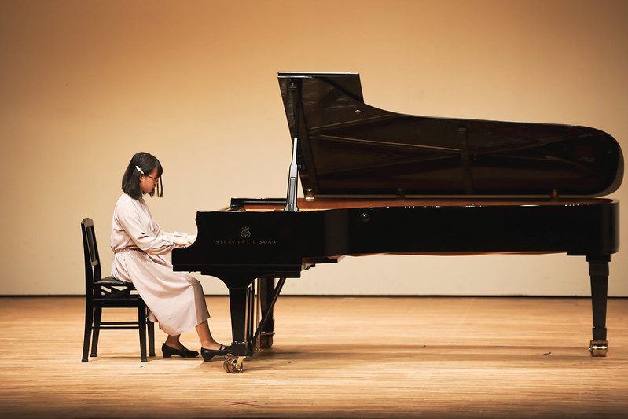
各年龄
把脑海中的旋律变成完整的作品和歌曲，涵盖古典与现代风格。
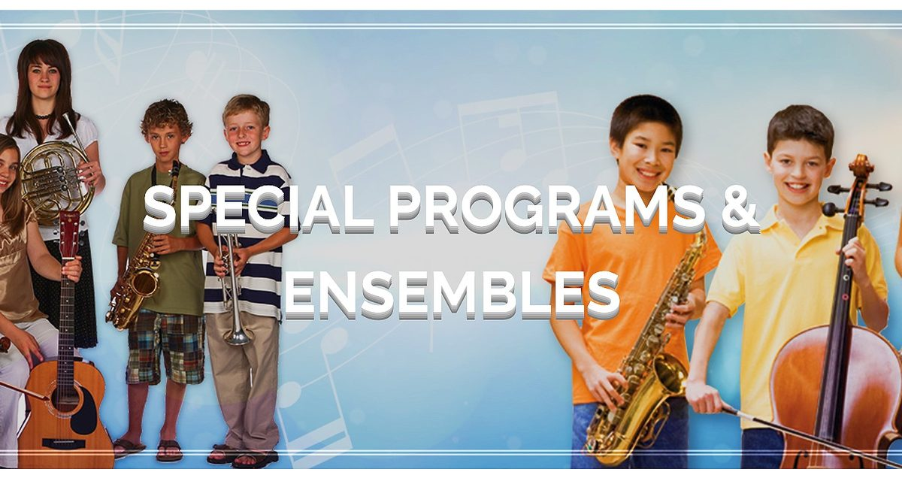
中级以上
自组小组上课，或加入合奏二重奏：钢琴与小提琴、两把小提琴、吉他与小提琴、吉他与钢琴。
考试预备
由卑诗省教育局注册英语教师授课的 28 小时线上考试预备班，以及一对一 VIP 外教课程。
从这里开始
共 120 分钟一对一课程，由匹配的老师授课，按学生情况三选一：
仅限新生 · 每个家庭限购一次 · 需预约 · 不可退款 · 取消、延期或一次性改期需提前 48 小时通知 · 购买后两个月内无预约则失效 · 每周至少安排一次课
付款后请在付款页面“备注”栏留言，或短信/邮件告知所选试课套餐及学生姓名。上课日期与时间将通过短信和邮件确认。购买前后均可联系我们查询可约时间。
试课后学费
| 套餐 | 价格 |
|---|---|
| 10 × 30 分钟一对一课 | $438 |
| 20 × 30 分钟一对一课 | $803 省 $70 |
| 10 × 45 分钟一对一课 | $597 |
| 20 × 45 分钟一对一课 | $1,123 省 $70 |
| 10 × 60 分钟一对一课 | $793 |
| 20 × 60 分钟一对一课（1–2 名学生） | $1,403 省 $70 |
| 小组课，3–4 人，45 分钟 | $35 每人 |
| 半私教课，2 人，45 分钟 | $40 每人 |
| 雅思/思培/托福 28 小时完整课程 | $757 |
网上缴费 或 EMT 转账：短信 778‑723‑9999 索取转账邮箱
学生成绩
从皇家音乐考试的省内最高分、本地音乐节与比赛决赛，到每一个个人里程碑，我们为学生的成就感到骄傲。
| 学生 | 考试 | 成绩 |
|---|---|---|
| Terrence Zhang | 乐理 7 级 | 特优 98 |
| Zachary Gao | 乐理 5 级 | 特优 100 |
| Sunny Tang | 乐理 6 级 | 特优 98 |
| Jacob Castro | 钢琴 9 级 | 优良 |
| Serena Cheng | 钢琴 8 级 | 一等优异 88 |
| Olessya Ng | 钢琴 6 级 | 一等优异 88 |
| Alyson | 钢琴 5 级 | 一等优异 84 |
| Iris Zhu | 钢琴 3 级 | 优良 |
| Panshul Jaiman | 钢琴 3 级 | 优良 |
| Rianna T Chu | 小提琴 8 级 | 优良 |
| Angelina Zhang | 小提琴 6 级 | 一等优异 83 |
| Nazanin Sadoughian | 小提琴 6 级 | 特优 95 |
| Ayaka Iwai | 小提琴 6 级 | 一等优异 83 |
| Callie Tan | 小提琴 4 级 | 特优 98 |
| Agrima Jaiman | 小提琴 3 级 | 优良 |
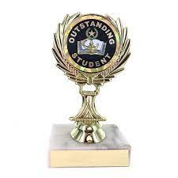
RCM 考试成绩可计入高中学分。考试费及考场租用费另计。师资
持有加拿大皇家音乐学院、卑诗省注册音乐教师协会、加拿大音乐教师协会联合会及北美音乐家协会认证，多位老师拥有音乐与教育硕士学位。完整英文简介见师资页面。
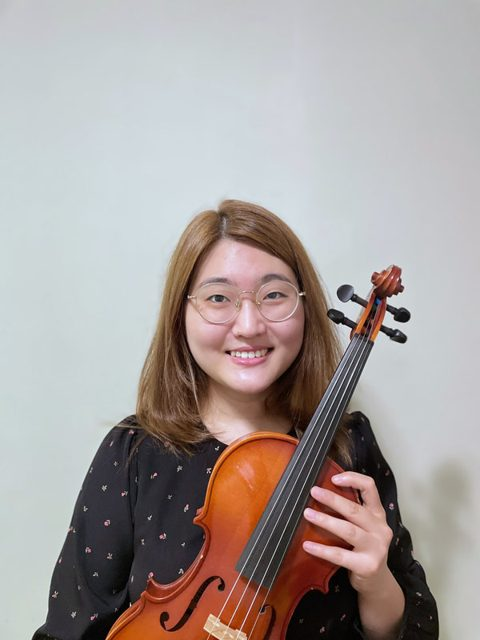
Jenny HwangMA, BEd, BMus钢琴、小提琴、乐理 Asya SinecenBMus钢琴、乐理 Ivy LuMMus, MA, BMus钢琴、声乐、小提琴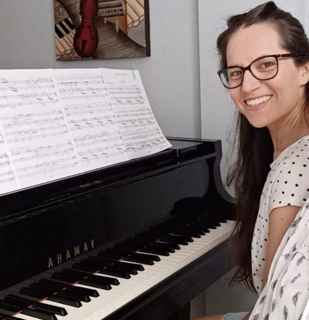
Nely PerezMMus, MEd钢琴、乐理 Parisa MoghadamMMus, MEd钢琴、乐理 Adrianne MarcanoBMus钢琴、小提琴、乐理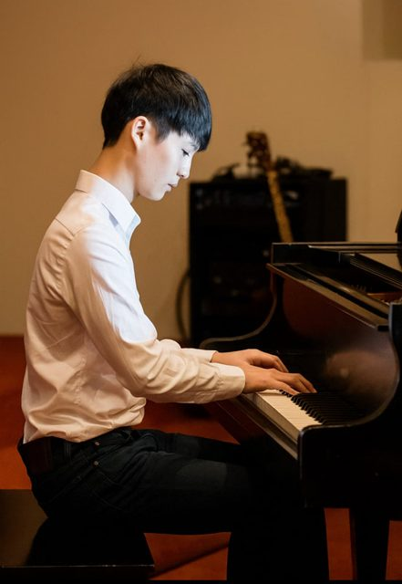
Chris KimMMus, BMus小提琴、钢琴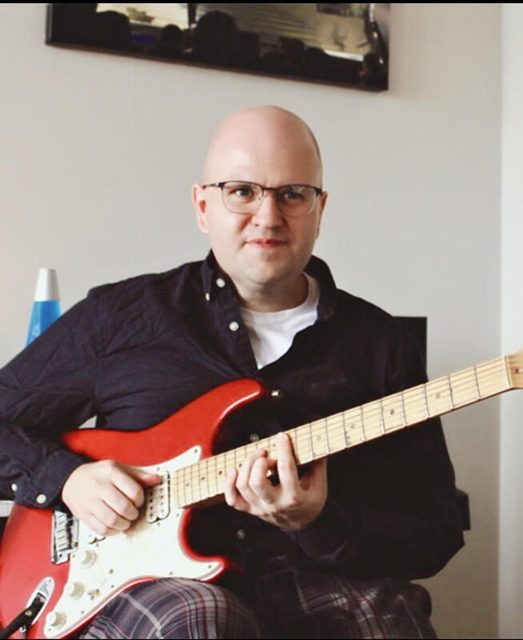
Christopher GilesBFA作曲、古典与电吉他、尤克里里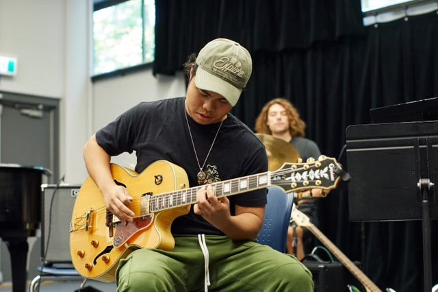
Jafnel FloresBMus吉他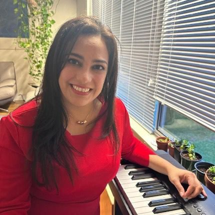
Daywuy Mejias钢琴家 · 音乐治疗师钢琴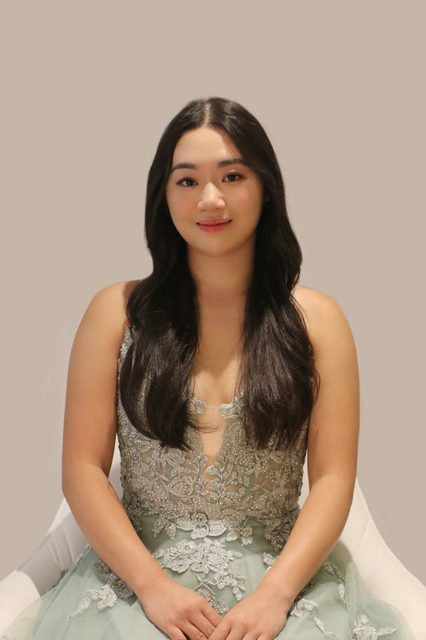
Nina VuMMus, BMus钢琴、乐理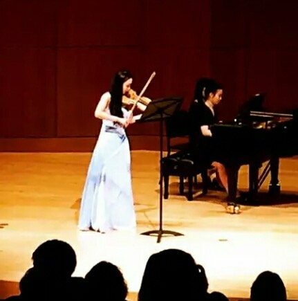
Lina HanMMus, BMus · 中英双语小提琴、钢琴入门 Arianne MBA · 英语教师雅思、托福、思培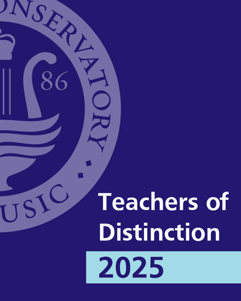
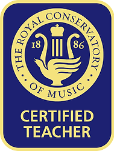
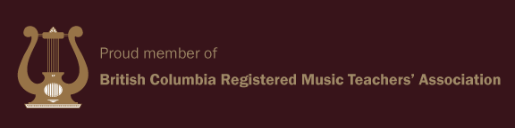
英语课程
由卑诗省教育局注册英语教师 Arianne 授课，线上教学，中英文均可咨询。
VIP · 一对一外教
小班 · 外教
问：作为学生，我如何参加在线课程？
答：网站上订购我们的在线课程后，您将收到一封电子邮件收据。请下载 ZOOM 线上学习软件。在上课当天，我们将向您发送电子邮件，内容包括：您预订的在线课程的链接，以及课程的日期和时间。在课程开始前约 30 分钟，单击链接，然后在屏幕上弹出教师课程的视频页面。我们的老师会与您确认麦克风和摄像头是否正常工作。班上的每个学生确认后，老师即可开始上课。在线课程结束后，您只需要关闭视频页面即可。
问：如果麦克风或摄像头出现异常问题该怎么办？
答：请放心，我们不需要学生使用摄像头。如果您发现自己的麦克风无法使用，可以使用打字功能与老师在线交流。
问：我可以从哪里获得官方考试测试？
答：我们为所有参加该课程的学生提供免费的在线课堂材料和模拟考试卷。
家长评价
我的两个孩子在这里学钢琴和小提琴已经五年多了。儿子现在是 RCM 钢琴十级，考试获得一等优异成绩。他们的老师 Adrianne 非常敬业。
价格合理，老师经验丰富。如果你是初学者，这里绝对是最好的选择。
我们的两个孩子来了大约一年，一个学钢琴，一个学尤克里里。他们的技巧和对乐器的热爱都增长了很多。
老师鼓励学生，让课程充满乐趣，真正帮助建立自信。看得出他们既重视技巧，也关心学生本人。
孩子们很喜欢这里的音乐课。老师很友善、有耐心。我们已经来了一年多。
上课时间非常灵活，我们很容易就把课程安排在工作之余。
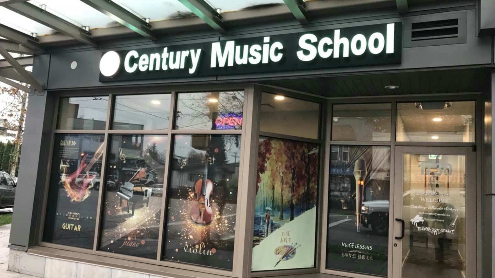
联系我们
我们努力为所有学生创造一种成功的体验，以建立他们的自尊、自信和对艺术的终身热爱。想了解有关课程、私人课程和线上课程的更多信息，请联系我们。学校位于温哥华 Kensington 社区中心，Victoria Drive 与 Knight Street 之间，步行可达 Lord Selkirk 小学，距 Nanaimo 天车站约 6 分钟车程；19、25、20 路公交车在门口停靠，周边有充足的免费路边停车位。
在付款页面购买新生试课，或选择 30、45、60 分钟的课程套餐。付款后请告知所选课程及学生姓名，以便更快安排。也接受 EMT 转账。收到付款后我们会确认上课时间。
可在网站上直接付款，或使用 Interac e‑Transfer 转账，可省 3% 刷卡手续费。套餐越大优惠越多。
钢琴课最小 4 岁即可开始，成人及长者均可报名。其他音乐、艺术及语言课程建议 5 岁以上。
一对一课程可以。请提前一周告知想换的课程，新课程时长需与原课程相同。
没有要求。家长可以送到后离开、课后接回，也可以旁听，或在教室外等候。
提前 24 小时通知：两周内补课（到校或 Zoom）；提前 48 小时通知：可延期到本学期结束之后（每 4 个月最多 2 次）；工作日上午 10 点前的紧急请求：当周 Zoom 补课。未经通知缺课按常规收费，不予补课。
不需要。开始时可以租或买一台电子琴，但必须是标准尺寸琴键且有力度感应，建议至少 60 键，以免很快不够用（标准钢琴为 88 键）。
先到 Tom Lee 或 Long & McQuade 等琴行租一把小提琴。小提琴有不同尺寸，琴行会为您量身测量。别忘了配一个肩托。
7 岁以下的孩子弹吉他通常较吃力，建议 5–8 岁先从尤克里里开始（与吉他的弦相同）。初学吉他建议选用尼龙弦的民谣吉他，对手指更友好。
是的。我们的老师均为 RCM 认证教师，学生经常获得一等优异和特优成绩，包括省内最高分。RCM 考试成绩还可计入高中学分。
有。补课可以通过 Zoom 进行，英语考试课程为线上授课。请咨询您所学乐器的线上课程安排。
学校周边有免费的住宅区路边停车位。19、25、20 路公交车在门口停靠，Nanaimo 天车站约 6 分钟车程。